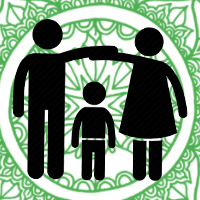

 Adopt
Donate
ABOUT US
CONTACT US
WEBSITE INI ADALAH WADAH UNTUK MEMBANTU ANAK- ANAK YANG KURANG BERUNTUNG DALAM HIDUPNYA, SEHINGGA MEREKA DAPAT MENJALANI HIDUP YANG LEBIH MEMBAHAGIAKAN
TERIMA KASIH TELAH BERKUNJUNG